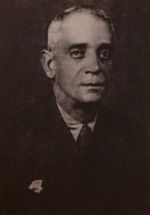
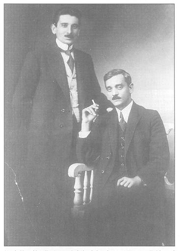
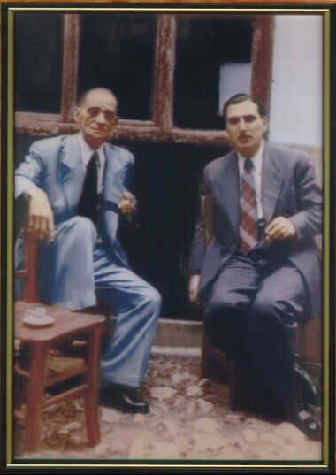
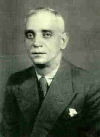
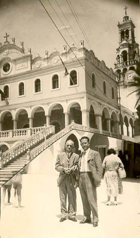
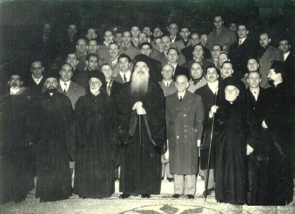
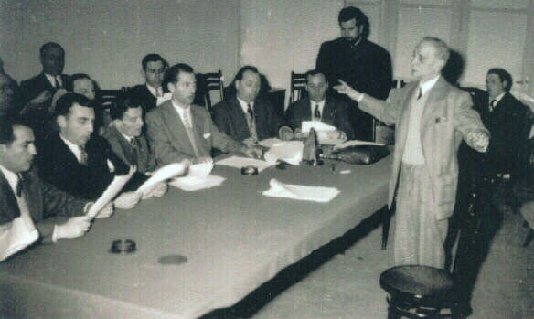

Κωνσταντίνος Πρίγγος / Konstantinos Pringos
Άρχων Πρωτοψάλτης της Μεγάλης του Χριστού Εκκλησίας / Archon Protopsaltis of the
Great Church of Christ

(image from Manolis Hatziyakoumis' CD series, click for original size)
"...because if I chant these things to you and you listen, you will be able to chant
them like me in the future".
Biography, Works and Other Information
Konstantinos Pringos was born in Constantinople in 1892 and died in Athens in 1964.
He learnt to chant by teachers including Ioannis Palasis and Iakovos Nafpliotis.
Between 1911-1913 he served as Archon Second Domestikos of the Great Church next
to Konstantinos Klavvas.
In 1913 he left the Patriarchate (due to the very low wage of the position of Second
Domestikos) to become Protopsaltis of the Church of St Dimitrios of Tatavla. Between
1925-33 he moved to Thessaloniki and chanted in various churches around Northern
Greece creating a good reputation between psaltic circles and a wave of followers
of his psaltic style. In 1933 he returned to Constantinople and chanted in various
churches.
In 1938 he was invited to become Lambadarios of the Patriarchate since Archon First
Domestikos Anastasios Michaelidis who was the expected successor of that position
had rejected the offer due to its heavy requirements (according to Angelos Boudouris).
In 1939 he became Protopsaltis (replacing the ill and old Iakovos Nafpliotis) and
served as Protopsaltis of the Great Church until 1959 approximately. During these
20 years of his Protopsaltia he often visited churches in Constantinople and in
Greece, invited to chant at their parish feasts. He became renowned for his majestic
and hegemonic (as he used to call it) interpretation and superb voice qualities
shown off in compositions written especially for such parish feasts which, as he
used to say, were not meant to be chanted in the Patriarchal Church. He also taught
Byzantine Music at the Theological School of Halki in the 50s.

(Palasis and his student Pringos, image from Christos Tsiounis' book on Thrasyvoulos
Stanitsas, click for original size)
In the late 50s he became paraplegic to the point that he could barely walk up to
the psalteri and that with the help of his friends that supported him. Around 1960
he retired in Athens seeking medical treatment. He died in 1964 and was buried in
the Third Cemetery of Athens. A few years later, some of his students and supporters
with the initiative of Georgios Tsatsaronis built a monument grave for all Protopsaltai
of the Great Church and moved the remains of Pringos there.
For some psaltai today, Pringos is considered the last of the so-called "old Patriarchal
school" and his death meant the end of an era of Byzantine Chant. Despite that,
his recordings had been treasured privately by some psaltai and only recently did
they become available to all by websites such as cmkon.org, analogion.com and by
CD publications such as those of Georgios Konstantinou. With the generous offer
of recordings by many people (especially Georgios Michalakis, Basil Stavropoulos,
Vasili Zacharis and others) analogion.com was the first to present the complete
(to our knowledge so far) series of recordings of Pringos and Iakovos Nafpliotis
made in early 20th century in what were the first ever recordings of Byzantine Chant.
During his life Pringos published informally half of the Anastasimatarion and Holy
Week in collaboration with Avraam Efthemiadis who actually wrote down the pieces
(probably because Pringos was not good at orthography as attested by Boudouris).
A few years after Pringos' death, his students published as single books his Anastasimatarion,
Megale Evdomas (Holy Week) and his Mousike Kypsele (Doxastarion) in a book series
titled "Patriarchike Forminx". A collection of Pringos' festal Liturgy compositions
was included in a Liturgy book published under his name by his admirer laywer Andreas
Papandreou in 1974 together with compositions from other psaltai. Pringos' compositions
for the Liturgy have been criticised by many as being non-traditional and being
influenced by external music. This is evident also by the choice of some non-ecclesiastical
modes (maqams) that label such compositions like Sabah, Houzam, Kurdi etc. He himself
did not want them to be published since, as he once said to Avraam Efthemiadis,
"the classical old melodies of the Liturgy are irreplaceable" [ref. Prof. Alygizakis'
book, pending].
Archon Domestikos Angelos Boudouris wrote some previously unpublished information
about Pringos at the time of Iakovos Nafpliotis and later. Contains comments by
Nikolaos Raidestinos (son of Georgios Raidestinos Protopsaltis of the Great Church)
about Pringos [
html]. Raidestinos claimed that Pringos was the last one who knew something about old traditional Byzantine
chant. Nafpliotis thought the same, although both appear to have had reservations
as to the future success of Pringos as Protopsaltis.
Other information about Pringos has been published in the book of Thrasyvoulos Stanitsas'
biography published by Christos Tsiounis. For instance in that book it is mentioned
that Pringos and Stanitsas did not get along very well although they both admired
each other as psaltai. Stanitsas learnt a lot from Pringos as he himself says and
as can be heard from his chanting. Stanitsas also said that Pringos was invited
to chant the Doxastikon of Great Wednesday (Troparion of Kassiani) at other churches
after the Patriarchate service. He added the following story: A friend of Stanitsas
once asked him to go and listen to Pringos chanting the Troparion of "Kassiani" and Stanitsas said "don't go". However his friend went and when he saw Stanitsas
again he confessed that he would like to go every year and listen to Pringos chanting
that piece. Stanitsas explained that that was the reason why he "objected" to his
friend going earlier. He knew that Pringos' interpretation was captivating and did
not want to "lose" his friend.
Also according to Stanitsas (from the same book), Pringos used to pick exactly the
same base note pitches for the various pieces without using a tuning fork.

(Pringos with Thrasyvoulos Stanitsas, image from cmkon.org, click for original size)
Stylianos Tsolakidis, protocanonarchos of Iakovos Nafpliotis said that Pringos was
very good but not as good as Iakovos Nafpliotis. He mentioned that Pringos often
lifted the pitch of the basis of the mode chanted involuntarily resulting in being
corrected by Nafpliotis during the chant (being pushed by Iakovos' arm!).
The associations of psaltai of the Evros and Kalavryta regions of Greece have been
named "Konstantinos Pringos" in his honour.
Pringos' musical books are used sporadically at the Ecumenical Patriarchate up to
this day (when musical scores are used).
He was the first director of the newly founded choir of the Friends of Music of
Constantinople in the late 40s (see photo from a relearsal below).
Pringos fought against the introduction of polyphony in the Greek Orthodox Church
and he used to say that "people cannot pray with songs". He rejected the claim that
the slow papadic pieces resemble "amane" (slow exhibitionist style of singing developed
mainly in Asia Minor and Constantinople in early 20th century).
It is said that both Pringos and Stanitsas were taught many of the secrets of Patriarchal
chanting and order by Anastastios "Sobatzis" Michaelidis who was then First Domestikos.
According to Avraam Efthemiadis, Pringos was not highly educated however he understood
and felt what he was chanting to the point of being ecstatic while chanting. He
used to chant with the same majesty from the beginning of the Orthros (Matins) until
the end of the Liturgy. According to Christos Tsiounis, Pringos often liked to chant
a kalophonikos heirmos at the end of the Liturgy, especially "Efrikse Ge" by Panagiotis
Halatzoglou.
Pringos did not appear to have much theoretical knowledge about Byzantine Music.
He was an empirical psaltis (as most Patriarchal psaltai as attested by Angelos
Boudouris) however his practical knowledge and musical memory were so advanced that
he preserved a lot of the traditional elements of chanting to the newer generations
of psaltai. His vocal range, chronos, attacks and phrasing are superb. His intervals
are great most of the time although shaky during the end of his life probably due
to his age and illness. His pronnunciation and general style resembles a lot that
of his teacher Iakovos Nafpliotis. He did not use isokratema in most of his recordings
as far as we know. A study on Pringos' intervals using spectral analysis has been
performed by Tasos Fotopoulos and can be found here [
html]
(oet.gr).
Pringos appears to have recorded three grammophone plaques in early 20th century.
The plaques are mentioned in Panagiotis PAnagiotidis' book [reference pending] to
be kept at the Aristotle University in Thessaloniki, Greece by the team of Prof.
Antonios Alygizakis. There is no information as to what those plaques contain and
when/if they are going to be published.
His chanting of kalophonikoi heirmoi is superb. He does not follow the music text
note by note and he uses a loose tempo (free/eleutheros chronos). A very nice example
is his recording of the kalophonikos heirmos "Pasan tin Elpidan Mou" of Petros Bereketis
in Barys Mode. Elpidan Mou" published on tape by Athanasios Pettas.
Although Pringos (and Efthemiadis') analytic transcriptions of Patriarchal chanting
were the first to become mainstream popular between modern psaltai they were not
the first to be written. Former First Domestikos Angelos Boudouris had already written
down analytically much of the Patriarchal repertoire of his time "as it was chanted
in the Great Church" some 20 years before Pringos however his work remained relatively
unknown until very recently.
Pringos was criticised by Angelos Boudouris as chanting to "show off" sometimes
as well as for choosing a better wage instead of his Patriarchal education as Second
Domestikos in 1913. When Pringos became Lambadarios he quickly dismissed his Second
Domestikos (Prodromos Topaloglou) due to voice incompatibility and hired the then
inexperienced Dimitrios Magouris. Boudouris (and Nafpliotis) did not approve of
that action as it did not help Pringos get accustomed to the Patriarchal taxis.
Soon after Pringos took over the Protopsaltia from Nafpliotis, Boudouris was quick
to point out that such chanting does not have a place in the Patriarchal Church
and criticised Pringos for having "innovative ideas" regarding the Psaltic Art which
did not fit the conservative nature of Patriarchal psaltic roles. Pringos indeed
deviated sometimes from the Patriarchal tradition when chanting around Greece in
order to please his audience congregation but when asked why he didn't chant those
pieces at the Patriarchate he always maintained that such pieces were only for the
parish feasts and had no place at the Patriarchate. Despite such comments, the pieces
became very popular between modern psaltai and started a trend that lead to secularised,
exhibitionistic and western influenced chanting in the most sacred parts of the
Divine Liturgy.
Probably the most well known Cheroubikon of Pringos is the so-called "Chorodiakon" (choral) Cheroubikon in Plagal First mode. The naming of the piece (aren't all papadic
pieces choral?) and the composition itself (western influenced) are unfortunate.
Pringos started a trend of uncontrolled innovation in the Liturgical pieces especially
by Thessalonikian psaltai like Athanasios Karamanis, Harilaos Taliadoros and others.
From a related page of cmkon.org [
htm]
we quote the following about Pringos (translated by Dimitri Koubaroulis from the
Greek passage below):
"In the introduction of his Mousike Kypsele, Konstantinos Pringos presents the Patriarchal
style as "modest, simple and mystical" and that is was transmitted ear-by-ear by
listening as he says on tape: "...because if I chant these things to you and you
listen, you will be able to chant them like me in the future". And another time
again: "... well done Mitso, you did great, you imitate me without having heard
me, well done my son, it seems you have been born to be a psaltis". And another
time he narrated the following incident: In one of his trips to Greece from Constantinople,
after a Liturgy, the psaltai of that church gathered around him in the parish hall
and were discussing with him about the Psaltic Art. He chanted a few pieces for
them as he would often do. The protopsaltai and others in his audience asked him
to hear them chant too in order to get his opinion. Indeed they chanted various
pieces and in the end they all waited to hear the judgment of the great teacher
who told them: "All of you guys, you have great voices, you know music, you chant
in churches but you are not Psaltai. Why? Because you haven't listened." And to
explain himself he would present the argument of a language and its accent which
can only be learnt by ear".
"Ο δε Κωνσταντίνος Πρίγγος στον πρόλογο του της Μουσικής Κυψέλης, χαρακτηρίζει το
ύφος το πατριαρχικό «σεμνό, απέριττο, μυστικοπαθές», και για την μετάδοσή του με
την ακοή όμως λέγει στην απαθανατίζουσα την φωνή του κασσέτα ο ίδιος τα εξής: «...
διότι σε σας αν τα πω και τ'ακούσετε, θα τα λέτε μεθαύριο σαν κι εμένα». Και άλλη
φορά πάλι: «...μπράβο ρέ Μήτσο, ωραία τα κατάφερες μα εσύ με μιμείσαι χωρίς να με
έχεις ακούσει , μπράβο παιδί μου, φαίνεται ότι είσαι γεννημένος για ψάλτης». Kαι
άλλοτε πάλι μας διηγήθηκε ο ίδιος: Σ' ένα ταξίδι του στην Ελλάδα από την Κωνσταντινούπολη
και μετά από μια Λειτουργία μαζεύτηκαν στο τέλος στην αίθουσα του ναoύ οι ψάλτες
και συζητούσαν γύρω από την ψαλτική τέχνη. Όπως συνήθιζε, τους έψαλε μερικά μαθήματα.
Οι ακροατές του Πρωτοψάλτες κ.λπ. του είπαν σε μια στιγμή vα ψάλλουν κι αυτοί, να
τους ακούσει, για να τους πει τη γνώμη του. Πράγματι έψαλαν και αυτοί διάφορα μαθήματα
και στο τέλος περίμεναν όλοι να ακούσουν τη γνώμη του Μεγάλου Δάσκαλου που τους
είπε: «Βρε παιδιά, όλοι σας καλλίφωνοι είσθε, όλοι σας μουσικά ξέρετε, όλοι σας
στις εκκλησίες ψάλλετε, αλλά Ψάλτες δεν είσθε. Γιατί; Γιατί δεν ΑΚΟΥΣΑΤΕ. Και για
vα γίνει πιο αντιληπτός χρησιμοποιούσε την παρομοίωση μιας ξένης γλώσσας και της
προφοράς της, που δε γράφεται και ούτε διαβάζεται, παρά μόνο με το ΑΥΤΙ αποκτάται."

(image from ec-patr.net, click for original size)
Archon Mousikodidaskalos Avraam Eufthemiadis talks about Konstantinos Pringos in
his interview to Fr. Georgios Stathopoulos [
html]. He claims that Pringos did not have any students and that people presented him themselves
with certificates asking him to sign them so that they could prove they were his
students. Efthemiadis also did not believe that anybody after Pringos was as good
as him and talks about "corrupted photocopies". Despite that, there are a number
of psaltai that claim they are students of Pringos or have evidently been influenced
by his style or Pringos himself acknowledged his influence on them. Specifically:
Thrasyvoulos Stanitsas, Archon Protopsaltis of the Great
Church of Christ, claims he is the only one who should be called a true student
of Pringos because he spent 20 years chanting across him. See scanned excerpt from
Christos Tsiounis' book on Stanitsas [
jpg]. He denies that others who spent two months with Pringos can be called students of
Pringos.
Nikolaos Danielidis, Archon First Domestikos during the
time of Pringos Protopsaltis. The influence of Pringos' chanting can be heard in
(especially the earlier) recordings of Danielidis. Some such recordings have been
published by Christos Tsiounis on CD.
Chrysanthos Theodosopoulos, Archon Protopsaltis of the
Holy Archdiocese of Constantinople. He recorded some chants with Pringos in Thessaloniki.
The chants have been published on tape by protopsaltis Athanasios Pettas.
Harilaos Taliadoros, Archon Protopsaltis of the Holy Archdiocese
of Constantinople [
html]. Taliadoros spent some time with Pringos during Pringos' visits to Thessaloniki and was greatly influenced by
Pringos' style which he tried to preserve as he says (see here for more [
htm]
from dimitriathess.gr (in Greek)).
Georgios Tsatsaronis, Archon Mousikodidaskalos of the
Ecumenical Patriarchate. In this recording, Pringos mentions that Tsatsaronis had
been able to imitate his style to the point that their interpretation was indistinguishable
[
rm] (from ieropsaltis.com)
Avraam Efthemiadis, Archon Mousikodidaskalos of the Ecumenical
Patriarchate [
html]. Efthemiadis was acknowledged by Pringos to know how he would chant various pieces to the point of having him
write and publish booklets of his compositions under Pringos' name, after Pringos'
review. Pringos also praised Efthemiadis' theory book as "the most complete up to
that time" [ref. Efthemiadis theory book].
Christos Kromydas, [
htm]
(from megarevma.net). Kromydas studied with Pringos in Constantinople.
Athanasios Pettas, protopsaltis of the Church of Holy
Trinity, Piraeus, Greece (ref. [
pending]). Pettas appears in a photo with co-student Dimosthenis Paikopoulos holding a certificate of studies signed
by Pringos who also appears in the photo [photo pending].
Athanasios Karamanis, Archon Protopsaltis of the Holy
Archdiocese of Constantinople. Pringos is quoted to have said that Karamanis "stole
everything" (meaning his art) from him (ref. [
pending]).
Dimosthenis Paikopoulos, former Second Domestikos of the
Great Church. Paikopoulos appears in an old photo with Pringos and co-student Pettas.
([
photo pending]).
and others [pending]
Pringos was married to [pending] and had three children [pending].

(Pringos with his friend Elias Bodganopoulos in Tinos island, Greece, image from
www.orthodoxhymns.net/sound.htm, click for original size)
Tribute to Pringos at ec-patr.net [
htm]
(in English) and [
htm](in
Greek)
Tribute to Pringos in cmkon.org [
htm]
(in Greek).
Information about Pringos can also be found in books with biographies of the Patriarchal
psaltai by Fr Serapheim Farasoglou and Panagiotis Antonellis. We do not have these
books [references pending].
Publications
It seems that Pringos never took seriously the publishing of his musical works.
On the contrary, he seems to have opposed the publishing of his Liturgy compositions
altogether [ref. from Hatziyakoumis CD series pending]. Fr. Georgios Stathopoulos
mentions in the Necrology of Avraam Efthemiadis [
html] that Pringos was motivated to compose his Patriarchike Forminx series by Avraam
Efthemiadis, a close friend and partner of his in his musical work. It is said that
generally Efthemiadis was trusted by Pringos to write down compositions under Pringos'
name since "he knew how Pringos would chant them". Pringos is said to have reviewed
Efthemiadis' transcriptions and made corrections.
Πατριαρχική Φόρμιγξ, Αναστασιματάριον / Patriarchike Forminx, Anastasimatarion,
First Edition. The material of this book was written up to the middle of Fourth
Mode by Avraam Efthemiadis under Pringos' supervision and distributed informally
in 16-page booklet series in Constantinople in 1952. After Pringos' death it was
completed and published in the late 60s as one book by Dimitrios Nerantzis who transcribed
the other half of the book from recordings he made on request while Pringos was
in hospital. Unfortunately (as Nerantzis explains in the introduction of the second
edition of this book) some of those hospital recordings (the part between Fourth
and Plagal First mode) were damaged and lost. To complete the lost recordings, Nerantzis
asked Archon Protopsaltis Thrasyvoulos Stanitsas to record the missing pieces for
him as they were chanted by Pringos, which Nerantzis then transcribed and added
to the book. The First Edition of the book had many typographic mistakes and many
pieces (compared with other Anastasimataria) were missing probably due to the lack
of recordings of those pieces.
Πατριαρχική Φόρμιγξ, Αναστασιματάριον / Patriarchike Forminx, Anastasimatarion,
Second Edition by Georgios Konstantinou in 2007 under the auspices of Apostoliki
Diakonia Organisation of the Church of Greece. Here is an excerpt from Georgios
Konstantinou's radio show where he talks about this re-edition (in Greek). The new
dichrome edition uses a new font developed by Dimitri Papadopoulos and in comparison
to the first edition it includes several new pieces transcribed from Pringos' chanting
for the first time. However, the book is still missing many pieces compared to other
Anastasimataria. The book comes with a double CD with pieces chanted by Pringos.
For more information and audio samples listen to the following excerpt [
mp3, 11.7 Mb]. The addition of vertical bars and the notation of some of the melodic
attractions by Konstantinou has been criticised as inappropriate and even sacriligious
by some psaltai. More details [pending]. Konstantinou however mentions in the introduction
of the second edition of Pringos' Holy Week that the reception of the Anastasimatarion
by the psaltic community had been enthousiastic. Archon Didaskalos of the Apostolos
Dimitrios Nerantzis also applauded the re-edition, claiming that it is a practical
"psaltic Anastasimatarion" that he always dreamt of being available to psaltai.
More information and a point of sale of this book is here [
html]
and here [
htm]
(from apostoliki-diakonia.gr).
Πατριαρχική Φόρμιγξ, Μεγάλη Εβδομάς / Patriarchike Forminx, Megale
Evdomas (Holy Week), Written by Avraam Efthemiadis under Pringos' review
and first published informally in 1952 in 16-page booklet series in Constantinople.
The booklets were combined to a single book edition in 1969. Even though many pieces
were missing, this book became quickly the most popular Holy Week score for most
modern psaltai.
Πατριαρχική Φόρμιγξ, Μεγάλη Εβδομάς / Patriarchike Forminx, Megale
Evdomas (Holy Week), Second Edition in 2007 by Georgios Konstantinou
under the auspices of Apostoliki Diakonia Organisation of the Church of Greece.
The book comes with two CDs with previously unpublished Holy Week recordings of
Pringos. Konstantinou corrected the typographic errors of the first edition, added
complex vertical bars and notated some melodic attractions as Konstantinou could
hear them being performed by Pringos. A new font was used (as in the re-edition
of the Anastasimatarion) and some pieces were transcribed from recordings of Pringos
and published for the first time. Missing compositions for which Pringos did not
leave recordings were added from older classical books. Also added were a number
of liturgical texts to minimise switching between books during the services. The
usefulness of the addition of vertical bars and the notation of the melodic attractions
has been criticised as inappropriate and even sacriligious by some psaltai (details
pending). More details about the book and a point of sale is here [
htm]
(from apostoliki-diakonia.gr)
Πατριαρχική Φόρμιγξ, Μουσική Κυψέλη, Τόμος Α', Δοξαστάριον / Patriarchike
Forminx, Mousike Kypsele, Vol I, Doxastarion, First Edition after Pringos'
death, in late 60s [exact date pending].
Θεία Λειτουργία (Liturgy), First Edition (in two volumes)
in 1974. This is technically not a publication of Pringos himself. It was edited
and published by Pringos' admirer lawyer Andreas Papandreou. Contains a compilation
of works from Pringos and other psaltai who, according to Papandreou, continued
Pringos' legacy such as Karamanis, Mitrou and others. Some of the pieces have been
criticised as influenced from external (secular) music. Some Liturgical compositions
of Pringos from this book have been typed up and made available here [
htm]
(from analogion.net)
Note: The copyright of Pringos' works is held by the Apostoliki Diakonia Organisation
of the Church of Greece.

(K. Pringos with Patriarch Athenagoras and others at the Patriarchate, image from
cmkon.org/CMK_Ist.htm, click for original size)
Ηχογραφήσεις / Recordings
Early 20th cent. recordings with Iakovos Nafpliotis (between 1900-1930)
See the Iakovos Nafpliotis' page [
html]
Live at the Patriarchate with Thrasyvoulos Stanitsas (1950s)
The following were offered by Georgios K. Michalakis:
Presanctified Liturgy - Eulogeso ton Kyrion/Eie to onoma [
mp3,
116 Kb]
From feast ot St John the Baptist [
mp3,
2.3 Mb]
Osoi Eis Xriston [
mp3,
600 Kb]
More samples from graeca.mrezha.net [
html].
In particular, note this old recording from Holy and Great Monday (1958) [
mp3].
Compare Pringos' balanced interpretation with Stanitsas' extreme but beautiful ornamentation.
An excellent, historic recording.
His time in Thessaloniki and around Northern Greece
Όλη η ηχογράφηση από την εορτή της Μεταμορφώσεως στο Βόλο, 1958. Η ιστορική αυτή
ηχογράφηση προσφέρθηκε από το Δημήτριο Ζαγκανά τον οποίο και ευχαριστούμε εκ μέρους
όλων των ψαλτών που θα επωφεληθούν από αυτήν. Η φωνή του Πρίγγου όπως ακούγεται
στην ηχογράφηση είναι ακριβώς όπως ακουγόταν ο Πρίγγος χωρίς αλλοίωση από τα ηχοληπτικά
μηχανήματα. Αυτό εξακριβώθηκε από τους Άρχοντες Δομέστικους Δημοσθένη Παϊκόπουλο
και Ανδρέα Πετρόχειλο στον Δημήτριο Ζαγκανά.
The whole recording of Pringos from Volos, 1958 was offered by Dimitrios Zaganas
whom we thank of behalf of all psaltai who benefit from this recording. Mr Zaganas
verified with former Archon Domestikos Dimosthenis Paikopoulos and Andreas Petrocheilos
that the voice of Pringos heard in this recording is exactly the voice of the teacher
unchanged by the recording equipment.
Κατεβάστε την ηχογράφηση εδώ / Download the whole recording here:
Μέρος Α / Part I [mp3, 18 Mb]
Μέρος Β / Part II [mp3, 18 Mb]
Δημήτριος Ζαγκανάς: Η ηχογράφηση είναι πολύ καθαρή, αλλά
όχι πλήρης ούτε άνευ προσθηκών (πχ. το "Χαίρε" απ'το Θεοτόκε Παρθένε του Μπερεκέτη).
Είχα την τύχη και τιμή να έχω ακούσει ολόκληρη την ηχογράφηση αυτή (στο αυτοκίνητο,
καθ'οδόν προς έναν πανηγυρικό εσπερινό στην Αθήνα το 2001) μαζί με τον Δημοσθένη
Παϊκόπουλο και τον Ανδρέα Πετρόχειλο, μαθητές και δομέστικους του Πρίγγου, οι οποίοι
"εμνήσθησαν ημερών αρχαίων". Τους ρώτησα χαρακτηριστικά αν αυτή ήταν πράγματι η
φωνή του Πρίγγου (δηλ. όχι αλλοιωμένη από την παλαιά ζωντανή ηχογράφηση σε μπομπίνα
και το πέρασμα του χρόνου) και μου απάντησαν ομόφωνα πως αυτή ακριβώς ήταν η χροιά
και η ποιότητα της φωνής του, αναλλοίωτη.
|
Από την ίδια ηχογράφηση παλαιότερα ο Γεώργιος Μιχαλάκης είχε δημοσιεύσει δύο κομμάτια.
/ Previously, the following live recordings from Volos, Greece, 1958, were published
by Georgios K. Michalakis:
Kekragarion, Fourth Mode [
mp3,
262 Kb]
Makarios Aner, Plagal Fourth Mode [
mp3,
818 Kb]
Recordings of Pringos chanting with his student Chrysanthos Theodossopoulos at graeca.mrezha.net
[
html]

(K. Pringos at a rehearsal of the choir of the Friends of Music Association in Constantinople,
image from cmkon.org/CMK_Ist.htm, click for original size)
His retirement in Athens
Interview and chanting from his hospital bed dedicated to his friend Elias Bogdanopoulos.
[
wma] (from orthodoxhymns.net)
Georgios Michalakis has cleaned and edited the above recording [
mp3]
More recordings
Eothinon Doxastikon "Meta myron", Second Mode [
mp3, 2.5 Mb]
Eothinon Doxastikon "Ta tes Marias Dakrya", Plagal.Fourth Mode [
wma, 860 Kb]
Cheroubikon, Plagal Second Mode [
wma, 1.3 Mb]
Doxastikon, "Idi vaptete kalamos", Plagal Fourth Mode [
mp3, 520 Kb]
{kind=link}
{kind=link}
{kind=link}
{kind=link}
{kind=link}
{kind=link}
{kind=link}
{kind=link}